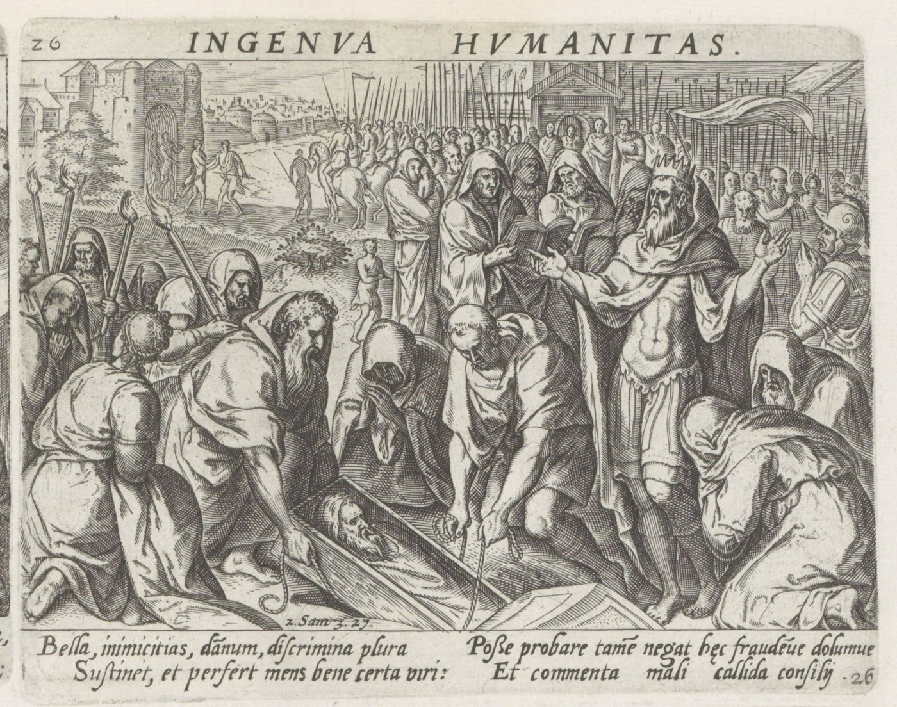

2 Samuel 3 — The Mister Translation

2 Samuel 3:31–34. David orders Joab and all the people to tear their clothes and mourn before Abner, follows the bier himself, and weeps at the grave in Hebron; the people weep with him. This panel is one of four on an album leaf from a Latin series of 48 prints on the life of David, which gives each scene a moral title, here “Ingenua humanitas”. The print shows the grave and the great crowd, and, like the Hebrew, says nothing of Joab’s act beyond what the lament implies.

Translator's Notes — verse by verse
Stronger and weaker. “And the war between the house of Saul and the house of David was long; and David went on growing stronger and stronger, and the house of Saul went on growing weaker and weaker”: holekh ve-chazeq, “going and strong”, and holekhim ve-dallim, “going and weak”. Chazaq is the root of “let your hands be strong” and of “seized” at the pool of Gibeon (2 Samuel 2:7, 16, already on these pages). Dal is the poor, the one Jehovah “raises from the dust” in Hannah’s song (1 Samuel 2:8, already on these pages); the house of Saul is now on its way to being that. The Greek has David “becoming strong” and Saul’s house “growing feeble”. The ASV has “David waxed stronger and stronger, but the house of Saul waxed weaker and weaker”; the KJV “but David waxed stronger and stronger, and the house of Saul waxed weaker and weaker”; the NIV “David grew stronger and stronger, while the house of Saul grew weaker and weaker”; the NWT 1984 “David kept getting stronger, and the house of Saul kept declining more and more”; the Douay “the house of Saul decaying daily”; the TLB “Saul’s dynasty became weaker and weaker”.
Six sons. “And sons were born to David in Hebron; and his firstborn was Amnon, by Ahinoam the Jezreelitess; and his second, Chileab, by Abigail the wife of Nabal the Carmelite”: the two wives of 2:2 and the fourth and last time that Abigail is still “the wife of Nabal” (1 Samuel 27:3, 30:5, already on these pages). Chronicles has Daniel for Chileab (1 Chronicles 3:1), and the Greek has Dalouia. “And the third, Absalom son of Maacah daughter of Talmai king of Geshur”: the Geshurite is one of the peoples David raided from Ziklag (1 Samuel 27:8, already on these pages), and his third son’s mother is a daughter of their king. “And the fourth, Adonijah son of Haggith”: the Adonijah who will say “I will be king” (1 Kings 1:5, already on these pages). “And the fifth, Shephatiah son of Abital; and the sixth, Ithream, by Eglah the wife of David”: only Eglah is called “the wife of David”, though all six were his sons by his wives. The list closes “These were born to David in Hebron”. The ASV has “and his second, Chileab, of Abigail the wife of Nabal the Carmelite”; the NIV “Kileab the son of Abigail the widow of Nabal of Carmel”; the NWT 1984 “Chilʹe·ab by Abʹi·gail the wife of Naʹbal the Carʹmel·ite”; the Douay “Cheleab of Abigail the wife of Nabal of Carmel”.
Making himself strong. “That Abner was making himself strong in the house of Saul”: mitchazzeq, the reflexive of chazaq, the verb of David who “strengthened himself in Jehovah his God” at Ziklag (1 Samuel 30:6, already on these pages). David strengthens himself in Jehovah, and Abner in the house of Saul. The ASV has “Abner made himself strong in the house of Saul”; the KJV “made himself strong for the house of Saul”; the NIV “Abner had been strengthening his own position in the house of Saul”; the NWT 1984 “continually strengthening his position”; the Douay “ruled the house of Saul”; the Geneva “made all his power for the house of Saul”.
Rizpah. “And Saul had a concubine, whose name was Rizpah daughter of Aiah; and [Ish-bosheth] said to Abner: ‘Why have you gone in to my father’s concubine?’”: the Hebrew has only “and he said”, and the speaker is supplied from verse 8, “the words of Ish-bosheth”; the Greek names him here as Memphibosthe, the form it gives for Jonathan’s son. “Gone in to” is the idiom of sexual relations, and the Hebrew does not say whether the charge was true; Abner’s answer does not deny it. A father’s concubine is a claim on his place: Reuben “went and lay with Bilhah his father’s concubine” (Genesis 35:22, already on these pages), and Absalom will do it in the sight of all Israel (2 Samuel 16:21–22, now on these pages). Rizpah will return, guarding the bodies of her sons (2 Samuel 21:8–10). The ASV has “Wherefore hast thou gone in unto my father’s concubine?”; the NIV “Why did you sleep with my father’s concubine?”; the NWT 1984 “Why was it that you had relations with the concubine of my father?”.
A dog’s head. “And Abner was very angry at the words of Ish-bosheth, and said: ‘Am I a dog’s head that belongs to Judah?’”: “a dog’s head” stands in one verse of the Hebrew Bible, this one. The Philistine had said “Am I a dog, that you come to me with sticks?” (1 Samuel 17:43, already on these pages), and David had called himself “a dead dog” (24:14). The phrase “that belongs to Judah” can be read as “on the side of Judah”, or, as the Geneva reads it, “which against Judah do show mercy”; the Greek leaves out “of Judah” and has Abner say “I did not desert to the house of David”. The ASV has “Am I a dog’s head that belongeth to Judah?”; the KJV “Am I a dog’s head, which against Judah do shew kindness”; the NIV “Am I a dog’s head — on Judah’s side?”; the NWT 1984 “Am I a dog’s head that belongs to Judah?”; the Douay “Am I a dog’s head against Juda this day”; the TLB “Am I a Judean dog to be kicked around like this?”.
Kindness, and the guilt of this woman. “Today I do kindness with the house of Saul your father, with his brothers and with his friends, and I have not let you be found in the hand of David; and you charge me today with the guilt of this woman!”: chesed, “kindness”, the word David used of the men of Jabesh, “this kindness with your lord, with Saul” (2 Samuel 2:5, already on these pages). Abner claims it for himself. “I have not let you be found” is hamtsitikha, “made you to be found”, the verb of David’s men who “found” Saul at Gilboa (1 Samuel 31:8, already on these pages) in its causative form. The ASV has “This day do I show kindness unto the house of Saul thy father”; the NWT 1984 “Today I keep exercising loving-kindness toward the house of Saul your father”; the NIV “This very day I am loyal to the house of your father Saul”; the Douay “who have shewn mercy to the house of Saul thy father”.
The oath. “So may God do to Abner, and so may he add to him, if, as Jehovah has sworn to David, I do not so to him — to transfer the kingdom from the house of Saul, and to set up the throne of David over Israel and over Judah, from Dan to Beer-sheba”: the oath-formula of Eli (1 Samuel 3:17), Saul (14:44) and David (25:22, all already on these pages), here turned on Abner himself. No earlier verse of these books records Jehovah’s oath to David; Samuel had said the kingdom was given to “a neighbour of yours who is better than you” (15:28, 28:17, already on these pages), and Abner speaks as one who knows it. “From Dan to Beer-sheba” stands in seven verses of the Hebrew Bible, among them the gathering of the tribes (Judges 20:1) and Samuel’s confirmation as prophet (1 Samuel 3:20, both already on these pages). The ASV has “God do so to Abner, and more also, if, as Jehovah hath sworn to David, I do not even so to him”; the NIV “May God deal with Abner, be it ever so severely”; the NWT 1984 “So may God do to Abʹner and so may he add to it”; the Douay “So do God to Abner, and more also”.
He could not answer. “And he could not answer Abner another word, because he was afraid of him”: Ish-bosheth, whom Abner made king at Mahanaim (2 Samuel 2:8, already on these pages), says nothing more. The ASV has “he could not answer Abner another word, because he feared him”; the NIV “did not dare to say another word to Abner”; the NWT 1984 “he was not able to say one word more in reply to Abʹner”.
Whose is the land? “And Abner sent messengers to David on the spot, saying: ‘Whose is the land?’ and saying: ‘Cut your covenant with me, and look — my hand is with you, to turn all Israel around to you’”: tachtav, “on the spot”, is the word of Asahel who died “on the spot” (2 Samuel 2:23, already on these pages), and its sense is uncertain; the ASV and KJV have “on his behalf”, the Douay “for himself”, and the Greek has a place, “to Thailam, where he was”. “Cut a covenant” is the phrase of Jabesh to Nahash (1 Samuel 11:1) and of Jonathan and David (18:3, both already on these pages); here it is asked of David, and again in verse 21. The ASV has “Whose is the land? saying also, Make thy league with me”; the NIV “Whose land is it? Make an agreement with me”; the NWT 1984 “To whom does the land belong? … Do conclude your covenant with me”; the Douay “Whose is the land? … Make a league with me”.
Michal first. “And he said: ‘Good; I will cut a covenant with you. Only one thing I ask of you: you shall not see my face unless you first bring Michal daughter of Saul, when you come to see my face’”: “you shall not see my face” in this form stands in one verse of the Hebrew Bible; its plural is Joseph’s condition to his brothers, “You will not see my face unless your brother is with you” (Genesis 43:3, already on these pages). The condition is Michal, Saul’s daughter. The ASV has “thou shalt not see my face, except thou first bring Michal, Saul’s daughter”; the NIV “Do not come into my presence unless you bring Michal daughter of Saul”; the NWT 1984 “You may not see my face except first you bring Miʹchal, Saul’s daughter”.
A hundred foreskins. “And David sent messengers to Ish-bosheth son of Saul, saying: ‘Give me my wife Michal, whom I betrothed to myself for a hundred foreskins of the Philistines’”: Saul had asked a hundred (1 Samuel 18:25), and David had brought two hundred (18:27, both already on these pages); here he names the price asked and not the price paid. David asks Ish-bosheth, not Abner. The ASV has “Deliver me my wife Michal, whom I betrothed to me for a hundred foreskins of the Philistines”; the NIV “whom I betrothed to myself for the price of a hundred Philistine foreskins”; the NWT 1984 “Do give over my wife Miʹchal, whom I engaged to myself for a hundred foreskins”; the Douay “Restore my wife Michol”.
From a man. “And Ish-bosheth sent, and took her from a man, from Paltiel son of Laish”: the Hebrew has “from a man” and then the name, and only in the next verse “her husband”. Saul had given Michal “to Palti son of Laish, who was from Gallim” (1 Samuel 25:44, already on these pages). “And her husband went with her, going and weeping behind her, as far as Bahurim”: “behind her” is acharei, “after”, and Bahurim is where Shimei will curse David (2 Samuel 16:5, now on these pages). Abner says only “Go, return”, and “he returned”; the Greek spells the town Barakim. The ASV has “took her from her husband, even from Paltiel the son of Laish”; the NIV “weeping behind her all the way to Bahurim”; the NWT 1984 “weeping as he walked after her as far as Ba·huʹrim”; the Douay “followed her, weeping as far as Bahurim”.
The elders of Israel. “And the word of Abner was with the elders of Israel, saying: ‘Both yesterday and the day before you were seeking David as king over you’”: gam temol gam shilshom, “both yesterday and the day before”, is the idiom of “as before” at 1 Samuel 14:21 and 19:7 (already on these pages). The earlier chapters record Judah anointing David, not the elders of Israel seeking him; Abner speaks of a wish the text has not told. The ASV has “In times past ye sought for David to be king over you”; the NIV “For some time you have wanted to make David your king”; the NWT 1984 “Both yesterday and previously YOU proved yourselves seeking David as king”; the Douay “Both yesterday and the day before you sought for David”.
The word of Jehovah. “‘And now, do it; for Jehovah has spoken of David, saying: “By the hand of David my servant I will save my people Israel from the hand of the Philistines and from the hand of all their enemies”’”: “by the hand of David my servant” stands in one verse of the Hebrew Bible. The promise is the one Jehovah gave Samuel of Saul, “he will save my people from the hand of the Philistines” (1 Samuel 9:16, already on these pages), now said of David, and no earlier verse records it. The Hebrew has hoshia, which is not the first-person form; the Greek has “I will save”. The ASV has “By the hand of my servant David I will save my people Israel”; the NIV “By my servant David I will rescue my people Israel”; the NWT 1984 “By the hand of David my servant I shall save my people Israel”; the Douay “By the hand of my servant David I will save my people Israel”.
Benjamin, and the feast. “And Abner also spoke in the ears of Benjamin; and Abner also went to speak in the ears of David at Hebron all that was good in the eyes of Israel and in the eyes of the whole house of Benjamin”: Benjamin is Saul’s own tribe, and Abner speaks to it apart from “Israel”. “And Abner came to David at Hebron, and twenty men with him; and David made a feast for Abner and for the men who were with him.” The ASV has “David made Abner and the men that were with him a feast”; the NIV “David prepared a feast for him and his men”; the NWT 1984 “David proceeded to make a feast for Abʹner and for the men that were with him”.
In peace. “And Abner said to David: ‘Let me arise and go, and gather all Israel to my lord the king, that they may cut a covenant with you, and you may reign over all that your soul craves.’ And David sent Abner away; and he went in peace”: “that your soul craves” is the word of the Ziphites to Saul, “according to all the craving of your soul” (1 Samuel 23:20, already on these pages). “And he went in peace” stands in three verses of the Hebrew Bible, verses 21, 22 and 23 of this chapter, one after the other, before Abner is brought back. Eli had said “Go in peace” to Hannah (1 Samuel 1:17) and Jonathan to David (20:42, both already on these pages). The ASV has “that thou mayest reign over all that thy soul desireth”; the NIV “and that you may rule over all that your heart desires”; the NWT 1984 “all that your soul craves”; the Douay “as thy soul desireth”.
Joab returns. “And look — the servants of David and Joab came from the raid, and brought a great spoil with them; but Abner was not with David in Hebron, for he had sent him away, and he had gone in peace”: gedud, the raiding band, the word of David’s pursuit of the Amalekites (1 Samuel 30:8, already on these pages). The Greek has “from the sortie”. The ASV has “came from a foray, and brought in a great spoil with them”; the NIV “returned from a raid and brought with them a great deal of plunder”; the NWT 1984 “were coming from a raid, and the spoil that they brought with them was abundant”; the Douay “after having slain the robbers”.
What have you done? “And Joab went in to the king, and said: ‘What have you done? Look — Abner came to you; why have you sent him away, so that he is quite gone? You know Abner son of Ner, that he came to deceive you, and to know your going out and your coming in, and to know all that you are doing’”: “What have you done?” is Samuel’s question to Saul (1 Samuel 13:11, already on these pages). “Your going out and your coming in” is the language of command, of David at the head of Saul’s men, who “went out and came in before the people” (18:13, already on these pages). Joab says “know” three times in the one verse. The Greek has “Do you not know the wickedness of Abner?”. The ASV has “he came to deceive thee, and to know thy going out and thy coming in”; the NIV “he came to deceive you and observe your movements”; the NWT 1984 “it was to fool you that he came”; the Douay “that he might deceive thee”.
The cistern of Sirah. “And Joab went out from David, and sent messengers after Abner, and they brought him back from the cistern of Sirah; and David did not know”: bor ha-sirah is not named elsewhere (reported, not verified here), and the Greek has “the well of Seiram”. “After Abner” is acharei Avner. Abner had told Paltiel “Go, return” (verse 16), and now Joab’s messengers make Abner return. “And David did not know” sets the chapter’s weighing of knowledge: Joab’s “you know”, David’s “did not know”, the people’s “knew” and David’s “Do you not know” in verses 37–38. The ASV has “brought him back from the well of Sirah: but David knew it not”; the NIV “brought him back from the cistern at Sirah”; the NWT 1984 “David himself did not know of it”; the Douay “David knowing nothing of it”.
In the gate. “And Abner returned to Hebron; and Joab turned him aside into the midst of the gate, to speak with him quietly, and struck him there in the belly, and he died — for the blood of Asahel his brother”: “into the midst of the gate” stands in one verse of the Hebrew Bible. “Turned him aside” is vayattehu, the verb of Abner’s own advice to Asahel, “Turn to your right or to your left” (2 Samuel 2:21, already on these pages). Ba-sheli, “quietly”, is a rare word and its sense is uncertain; the Douay has “treacherously”, and the Greek “lying in ambush”. “In the belly” is ha-chomesh, where Abner struck Asahel (2:23), and the noun stands in four verses of the Hebrew Bible, all in 2 Samuel, the others being 4:6 (now on these pages) and 20:10; see chomesh. Hebron is a city of refuge (Joshua 20:7), where the one who killed “does not die until he stands before the congregation for judgement” (Numbers 35:12, both already on these pages); the text does not mention the law. The ASV has “smote him there in the body”; the KJV “smote him there under the fifth rib”; the NIV “stabbed him in the stomach”; the NWT 1984 “struck him in the abdomen”; the Douay “stabbed him there in the groin”; the TLB “pulled out a dagger and killed him”.
Innocent. “And David heard of it afterward, and said: ‘I and my kingdom are innocent before Jehovah for ever of the blood of Abner son of Ner’”: “afterward” is me-acharei ken, from the same acharei as “following” in the last chapter. “Innocent” is naqi, the word of “innocent blood” that Jonathan warned Saul against (1 Samuel 19:5, already on these pages). The ASV has “guiltless before Jehovah for ever of the blood of Abner”; the NIV “forever innocent before the Lord”; the NWT 1984 “innocent for time indefinite of bloodguilt for Abʹner”; the Douay “innocent before the Lord for ever of the blood of Abner”.
The curse. “Let it whirl on the head of Joab and on all his father’s house; and may there not be cut off from the house of Joab one who has a discharge, or one with the scaly disease, or one who holds the spindle, or one who falls by the sword, or one who lacks bread”: “whirl” is yachulu, from chul, the root of Saul’s writhing at Gilboa (1 Samuel 31:3, already on these pages). The discharge and the scaly disease are the two who are put out of the camp (Numbers 5:2, already on these pages), a man with a discharge (Leviticus 15:2) and the one with the scaly disease (13:45); “one who holds the spindle” is the spindle of women’s work, the one the capable woman’s palms “grip” (Proverbs 31:19, already on these pages; see pelekh), and the versions split on it. The Greek has “one who holds a staff”. The ASV and KJV have “one that hath an issue, or that is a leper, or that leaneth on a staff”; the NIV “a running sore or leprosy or who leans on a crutch”; the NWT 1984 “a man taking hold of the twirling spindle”; the Douay “that holdeth the distaff”; the Geneva “that leaneth on a staff”.
Joab and Abishai. “And Joab and Abishai his brother killed Abner, because he had put to death Asahel their brother at Gibeon, in the battle”: verse 27 names Joab alone, and Abishai is added only here; the Greek is softer, “were lying in wait for Abner”. “In the battle” is the narrator’s word, and David will say of Joab “he shed the blood of war in peace” (1 Kings 2:5). The ASV has “So Joab and Abishai his brother slew Abner, because he had killed their brother Asahel at Gibeon in the battle”; the NIV “Joab and his brother Abishai murdered Abner”; the NWT 1984 “they killed Abʹner over the fact that he had put Asʹa·hel their brother to death”; the Douay “slew Abner, because he had killed their brother Asael at Gabaon”.
Behind the bier. “And David said to Joab and to all the people who were with him: ‘Tear your clothes, and gird on sackcloth, and mourn before Abner.’ And King David walked behind the bier”: the command goes to Joab first, who must mourn the man he killed. David and his men had torn their clothes for Saul (2 Samuel 1:11, already on these pages). “Behind the bier” is acharei ha-mittah, “after the bed”, the same acharei; the king follows. The Greek has “behind the couch”. The ASV has “king David followed the bier”; the KJV “king David himself followed the bier”; the NIV “King David himself walked behind the bier”; the NWT 1984 “Even King David was walking behind the couch”; the Douay “king David himself followed the bier”.
Buried, and wept for. “And they buried Abner in Hebron; and the king lifted up his voice, and wept at the grave of Abner; and all the people wept”: “lifted up his voice and wept” is the phrase of Gibeah and of Ziklag (1 Samuel 11:4, 30:4, already on these pages). The Greek has the grave, “he wept over his tomb”. The ASV has “the king lifted up his voice, and wept at the grave of Abner”; the NIV “the king wept aloud at Abner’s tomb”; the NWT 1984 “the king began to raise his voice and weep at Abʹner’s burial place”.
As a fool dies. “And the king lamented for Abner, and said: ‘As a fool dies, should Abner die?’”: “and he lamented” stands in two verses of the Hebrew Bible, David’s two laments, this one and the one over Saul and Jonathan (2 Samuel 1:17, already on these pages). The word for “fool” is naval, and “as a fool dies” stands in one verse; the same letters write the name of Nabal, whom Abigail described, “as his name is, so is he: Nabal is his name, and folly is with him” (1 Samuel 25:25, already on these pages), and whom Jehovah struck. The Greek reads it as the name: “Shall Abner die as Nabal’s death?”. The ASV has “Should Abner die as a fool dieth?”; the KJV “Died Abner as a fool dieth?”; the NIV “Should Abner have died as the lawless die?”; the NWT 1984 “As with the death of a senseless person should Abʹner die?”; the Douay “Not as cowards are wont to die, hath Abner died”.
Not bound. “Your hands were not bound, and your feet were not brought to bronze fetters; as one falls before sons of injustice, you have fallen”: “bronze fetters” (nechushtayim) stands in seven verses of the Hebrew Bible, the first being Samson’s (Judges 16:21, already on these pages). Abner was not a captive; he fell to treachery. “You have fallen” is the verb of “How the mighty have fallen” (2 Samuel 1:19, already on these pages). “And all the people went on weeping over him.” The ASV has “nor thy feet put into fetters: as a man falleth before the children of iniquity, so didst thou fall”; the NIV “You fell as one falls before the wicked”; the NWT 1984 “your feet had not been put into fetters of copper”; the Geneva “nor thy feet tied in fetters of brass”; the Douay “as men fall before the children of iniquity, so didst thou fall”.
Until the sun goes down. “And all the people came to make David eat bread while it was yet day; but David swore, saying: ‘So may God do to me, and so may he add, if before the sun goes down I taste bread or anything at all’”: the oath is Abner’s formula of verse 9, now laid on David himself. David and his men had fasted “until the evening” for Saul (2 Samuel 1:12), and Saul had bound the people not to eat “before evening” (1 Samuel 14:24, both already on these pages); David binds only himself. The Greek calls the people’s coming “to give David a funeral meal”. The ASV has “David sware, saying, God do so to me, and more also, if I taste bread, or aught else, till the sun be down”; the NIV “May God deal with me, be it ever so severely, if I taste bread or anything else before the sun sets”; the NWT 1984 “So may God do to me and so may he add to it, if before the sun sets I shall taste bread”; the Douay “So do God to me, and more also, if I taste bread or any thing else before sunset”.
All the people. “And all the people took notice, and it was good in their eyes; as everything the king did was good in the eyes of all the people. And all the people and all Israel knew on that day that it was not from the king to put Abner son of Ner to death”: “all the people” stands in every verse from 31 to 37 except 33, the people’s verdict set against Joab’s act. “Good in their eyes” is the phrase of what Abner told David “was good in the eyes of Israel” (verse 19). The people “knew”, as David “did not know” (verse 26). The ASV has “all the people took notice of it, and it pleased them”; the NIV “the king had no part in the murder of Abner son of Ner”; the NWT 1984 “it had not originated with the king”; the Douay “it was not the king’s doing”.
A prince and a great man. “And the king said to his servants: ‘Do you not know that a prince and a great man has fallen this day in Israel?’”: Abner was “the commander of his army” (1 Samuel 14:50, already on these pages); here he is “a prince”, sar, “and a great man”. The ASV has “a prince and a great man fallen this day in Israel”; the NIV “a commander and a great man has fallen in Israel this day”; the NWT 1984 “a prince and a great man that has fallen this day in Israel”; the Douay “a prince and great man is slain this day in Israel”.
Too hard for me. “And I am this day frail, though anointed king; and these men, the sons of Zeruiah, are too hard for me”: “frail and anointed” (rakh u-mashuach) stands in one verse of the Hebrew Bible. Rakh is the word of the children Jacob would not drive hard, “the children are frail” (Genesis 33:13, already on these pages), against “hard”, qashim, the word of the battle that was “very hard” at Gibeon (2 Samuel 2:17) and of Nabal, “harsh and evil in his deeds” (1 Samuel 25:3, all already on these pages). David will say of them again “What have I to do with you, sons of Zeruiah?” (2 Samuel 16:10, now on these pages). The Greek has David a kinsman, “a relative”, and “appointed by a king”. The ASV has “I am this day weak, though anointed king”; the NIV “though I am the anointed king, I am weak”; the NWT 1984 “I today am weak although anointed as king”; the Douay “I as yet am tender, though anointed king”; the Geneva “weak and newly anointed King”.
Jehovah repay. “May Jehovah repay the doer of evil according to his evil”: “may Jehovah repay” stands in two verses of the Hebrew Bible, this one and Saul’s to David, “So may Jehovah repay you with good” (1 Samuel 24:19, already on these pages). It is the verdict he gave on Nabal, “the evil of Nabal Jehovah has returned on his own head” (25:39), and David leaves it with Jehovah. The ASV has “Jehovah reward the evil-doer according to his wickedness”; the KJV “the LORD shall reward the doer of evil according to his wickedness”; the NIV “May the Lord repay the evildoer according to his evil deeds”; the NWT 1984 “May Jehovah repay the doer of what is bad according to his own badness”; the Douay “the Lord reward him that doth evil according to his wickedness”.
Patterns worth carrying forward
Where this translation keeps the words exact and distinct: “stronger and stronger” and “making himself strong” for chazaq, as in 2 Samuel 2:7 and 1 Samuel 30:6; “frail” for rakh, as in Genesis 33:13; “gone in to”; “kindness” for chesed, as in 2 Samuel 2:5; “on the spot” for tachtav, as in 2:23; “cut a covenant”, as in 1 Samuel 11:1; “craves”, as in 1 Samuel 23:20; “went in peace” in verses 21–23 alike; “the belly” for chomesh, as in 2:23; “turned him aside”, as in 2:21; “innocent” for naqi; “the scaly disease” and “a discharge”, as in Numbers 5:2; “behind” and “after” for acharei; “lifted up his voice and wept”, as in 1 Samuel 30:4; “lamented”, as in 2 Samuel 1:17; “bronze fetters”, as in Judges 16:21; “all the people” throughout verses 31–37; and “Ish-bosheth”, “Hebron” and “Gibeon” in the forms of the last chapter.
Echoes paid. “Let your hands be strong” and the seizing at the pool of Gibeon (2 Samuel 2:7, 16); the raised poor of Hannah’s song (1 Samuel 2:8); the four times Abigail is still the wife of Nabal (1 Samuel 27:3; 30:5; 2 Samuel 2:2); the Geshurites raided from Ziklag (1 Samuel 27:8); Adonijah’s “I will be king” (1 Kings 1:5); David strengthened in Jehovah (1 Samuel 30:6); Reuben and Bilhah (Genesis 35:22); the dog of Goliath and David’s dead dog (1 Samuel 17:43; 24:14); David’s kindness to Jabesh (2 Samuel 2:5); the oaths of Eli, Saul and David (1 Samuel 3:17; 14:44; 25:22); the kingdom given to a neighbour (1 Samuel 15:28; 28:17); Dan to Beer-sheba (Judges 20:1; 1 Samuel 3:20); Ish-bosheth at Mahanaim (2 Samuel 2:8); Asahel dying on the spot (2 Samuel 2:23); Jabesh’s and Jonathan’s covenants (1 Samuel 11:1; 18:3); Joseph’s “you will not see my face” (Genesis 43:3); the hundred foreskins (1 Samuel 18:25, 27); Palti of Gallim (1 Samuel 25:44); “yesterday and the day before” (1 Samuel 14:21; 19:7); the promise to save from the Philistines (1 Samuel 9:16); the Ziphites’ craving (1 Samuel 23:20); “go in peace” (1 Samuel 1:17; 20:42); David’s pursuit of the raiders (1 Samuel 30:8); “What have you done?” and “going out and coming in” (1 Samuel 13:11; 18:13); Abner’s “turn aside” to Asahel (2 Samuel 2:21); the belly (2 Samuel 2:23); the city of refuge at Hebron (Joshua 20:7; Numbers 35:12); innocent blood (1 Samuel 19:5); Saul’s writhing (1 Samuel 31:3); the discharge and the scaly disease (Numbers 5:2; Leviticus 15:2; 13:45); the torn clothes of Saul’s mourning and the fast until evening (2 Samuel 1:11, 12; 1 Samuel 14:24); the weeping at Gibeah and Ziklag (1 Samuel 11:4; 30:4); David’s first lament (2 Samuel 1:17); Nabal’s name and death (1 Samuel 25:25); Samson’s bronze fetters (Judges 16:21); the fallen mighty (2 Samuel 1:19); Abner as commander (1 Samuel 14:50); Jacob’s frail children and Nabal’s harshness (Genesis 33:13; 1 Samuel 25:3); and Jehovah’s repaying (1 Samuel 24:19; 25:39).
Echoes planted. All Israel coming to David at Hebron and the covenant there (2 Samuel 5:1–3, now on these pages); the murder of Ish-bosheth in the belly (2 Samuel 4:6, now on these pages); Michal at the window (2 Samuel 6:16, now on these pages); Shimei at Bahurim and “sons of Zeruiah” (2 Samuel 16:5, 10, now on these pages); Absalom and his father’s concubines (2 Samuel 16:21–22, now on these pages); Rizpah’s vigil (2 Samuel 21:8–10); David’s charge about Joab, who “shed the blood of war in peace” (1 Kings 2:5); and the Chronicler’s list of David’s sons (1 Chronicles 3:1–3). None of these is translated here yet.
Next in this book: 2 Samuel 4 — two men of Beeroth murder Ish-bosheth in his bed and bring his head to David at Hebron, who has them put to death; Mephibosheth, Jonathan’s lame son, is introduced as a child carried in flight.